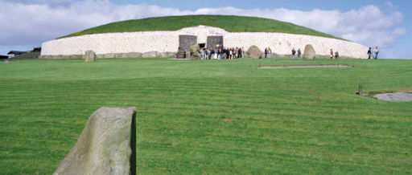

Newgrange
Newgrange was constructed over 5,000 years ago (about 3,200 B.C.), making it older than Stonehenge in England and the Great Pyramid of Giza in Egypt. Newgrange was built during the Neolithic or New Stone Age by a farming community that prospered on the rich lands of the Boyne Valley. Knowth and Dowth are similar mounds that together with Newgrange have been designated a World Heritage Site by UNESCO.
Archaeologists classified Newgrange as a passage tomb, however Newgrange is now recognised to be much more than a passage tomb. Ancient Temple is a more fitting classification, a place of astrological, spiritual, religious and ceremonial importance, much as present day cathedrals are places of prestige and worship where dignitaries may be laid to rest.
Newgrange is a large kidney shaped mound covering an area of over one acre, retained at the base by 97 kerbstones, some of which are richly decorated with megalithic art. The 19 metre long inner passage leads to a cruciform chamber with a corbelled roof. The amount of time and labour invested in construction of Newgrange suggests a well-organized society with specialised groups responsible for different aspects of construction.
Newgrange is part of a complex of monuments built along a bend of the River Boyne known collectively as Bru na Boinne. The other two principal monuments are Knowth (the largest) and Dowth, but throughout the region there are as many as 35 smaller mounds.
Visitor access to Newgrange is by guided tour only from the Bru na Boinne Visitor Centre on the south side of the river Boyne.